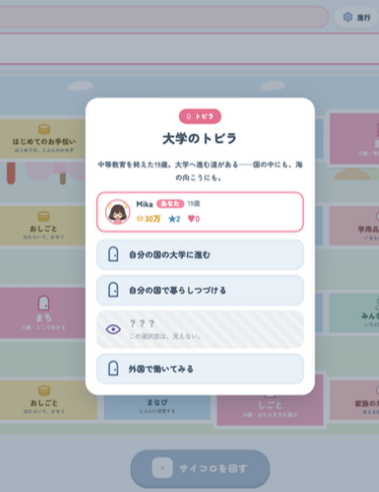
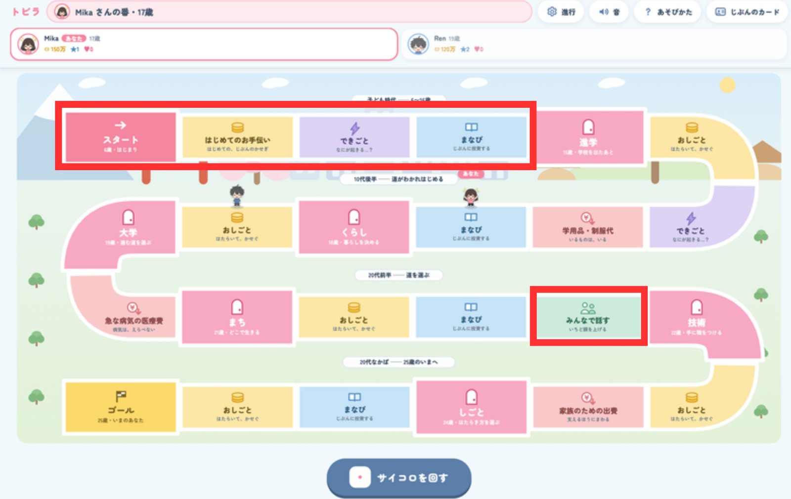
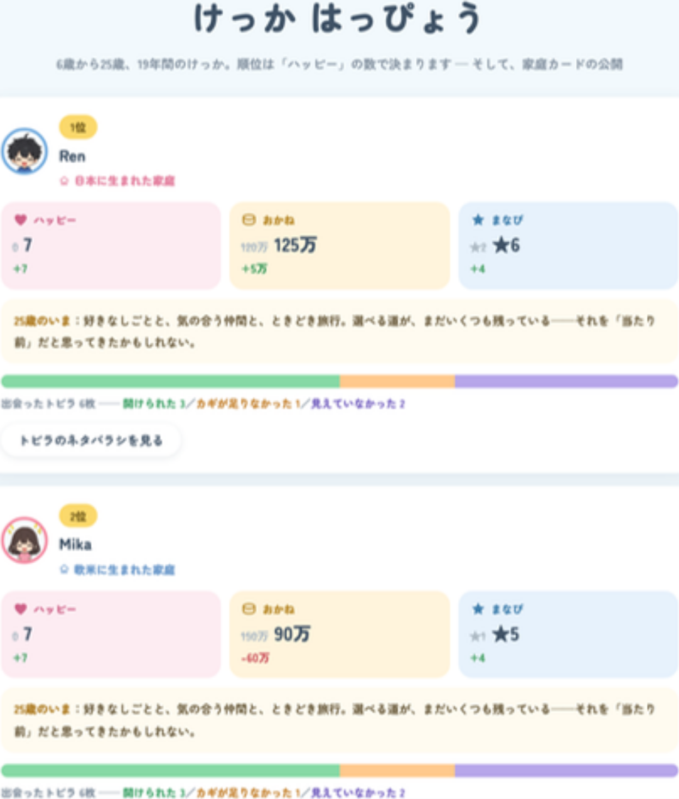
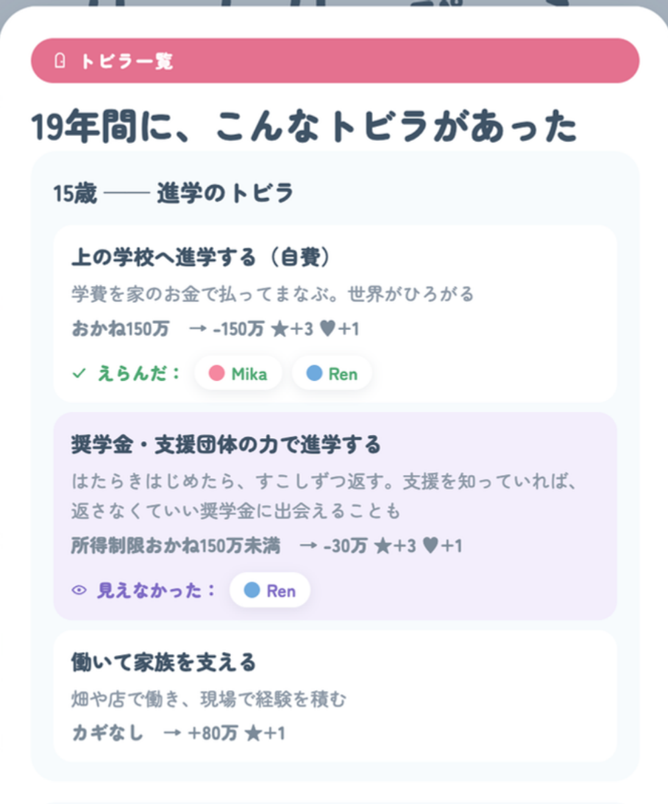

せかい版 ショート — 生まれた環境・選択肢によって、人生が変わる
サイコロを転がして、止まったマスで人生のトビラを開ける
お金、学び、ハッピーの3つの数字がターンを進めると増えていく
順位を決めるのは、お金ではなく♥ハッピーの数＝人生の選択肢を多く持ち、自分の意思で選べた回数
カギがいくつ必要かは、ここでは分からない
カギが足りなければ「このトビラは開かなかった」
カギの要らない道は必ず選べる
そもそも中身が見えない。選ぶことすらできない

カギが足りずに開けられないのと、
扉があることすら知らないのは、
まったく違う
15歳まではサイコロなしで1マスずつ——人生の土台をつくる期間。
15歳の進学のトビラからサイコロが始まります。
みんなで話すマスに止まったら、班の誰かが5分タイマーをかけてください！

人に見せない、隣をのぞかない。誰にどれが配られたかは最後まで秘密です
同じページを開き直せば復帰できます。ただし開始後の途中参加はできません
3〜4人で1チーム。その中で「ルームをつくる」係＝班名簿の1番上の人
進行役の画面に6文字が出る。ほかの人は「ルームに参加」からコードを入力
全員そろっても「ゲーム開始」はまだ押さない。⚠️のチェックボックスは触らない
みんなで話すマスに止まったら、班の誰かが5分タイマーをかけてください！
カギが足りずに開けられないのと、
扉があることすら知らないのは、
まったく違う

お金は伸びたけどハッピーは伸びていない、など自分の選択も踏まえて振り返ってみてね
カギがなくて開けられない、と、そもそも見えていなかった、は全く違うということを思い出そう
どんな仕事や生活を送っている？
これは家庭カードで配られた時とどう変わっている？

「19年間のトビラを見る」というボタンを押してね！
誰がどのトビラを通ったのか見てみましょう！
それは自分に見えていたトビラだったでしょうか？
生まれた環境と、開けられるトビラの数や見えていたものには
どのような違いや共通点があった？
周囲からの支援があったら、生活や選択は変わったかな？
問いが難しかったら、この質問から話を広げてみよう！
開けたいのに開けられないトビラって、どんな内容だった？
進学？ 就職？ 留学？ 支援内容？
学べば報われる、は、場が用意されている人の話です。
そしてその差は、次の世代の「生まれの差」へ——。
ゲームで見た「？？？」も「カギ（お金や学力の）不足」も、いまの世界に実在します。
この連鎖は、本人の努力だけでは断ち切れない。だから世界には、遺児を支える仕組みと人がいる
あしなが育英会は「あしながウガンダ」で、現地の遺児の教育を実際に支えている——ゲームに出てきた支援団体のモデル
AAIは、アフリカの遺児を大学へ送り出す奨学金。カギはまなびと「志」——祖国に貢献するリーダーを育てる「約束」の仕組み
このゲームは、まだ完成していません。
今日みなさんが感じた引っかかりが、そのまま改善点になります。
今日いちばん心に残った場面。
自分のカードを見たときのこと、他の人のカードを知ったときのこと。
アフリカや世界の遺児に、少しでも目を向けられたという変化はあったでしょうか？
あなたの前にも、世界のどこかの子の前にも、
まだ見ぬトビラがたくさんある。